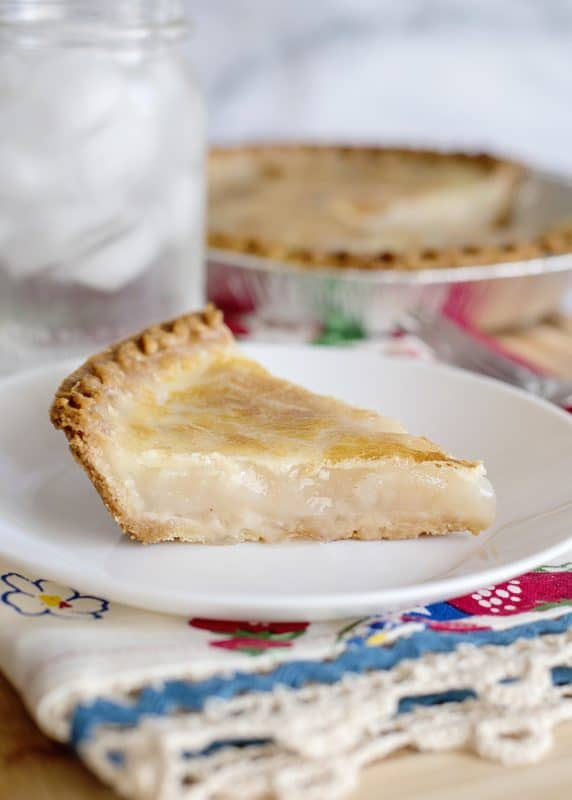

Water Pie: An American Classic

Introduction
During the challenging era of the Great Depression, a simple yet enduring culinary creation emerged Water Pie.
Born out of necessity and resourcefulness, this Depression-era classic transcended traditional notions of indulgence.
Crafted with minimal ingredients, the Water Pie symbolized resilience and creativity during times of hardship.
My mother, a beacon of strength in those trying times, would ingeniously prepare Water Pie for our family.
Despite its humble ingredients, the pie served as a comforting reminder of love and resourcefulness. Each slice bore
the taste of survival and the enduring spirit of a generation that found solace even in the simplest of culinary creations.
Ingredients
- All-Purpose Flour
- White Granulated Sugar
- Salt
- Vanilla Extract
- Uncooked pie Shell
Instructions
- Pour water into the uncooked pie shell. I know this sounds weird, but this is how it’s done.
- Whisk together flour, sugar, and salt.
- Sprinkle over water in the pie crust. DO NOT STIR.
- Drizzle on the vanilla extract and add butter pats on top of the pie.
- Bake in a preheated 400-degree oven for 30 minutes. Reduce heat to 375 degrees and continue baking for 30 more minutes.
- Let pie cool completely and then cover and place in the refrigerator. Pie will set up as it cools and is refrigerated.
It will look like it is not cooked when removed from the oven. It will look watery in the center; that is how it should
look. It will set up once it is cold.